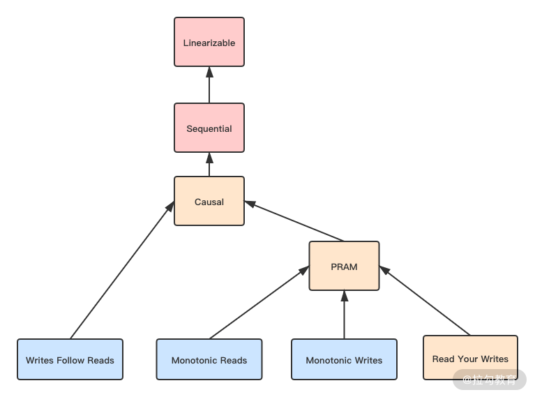
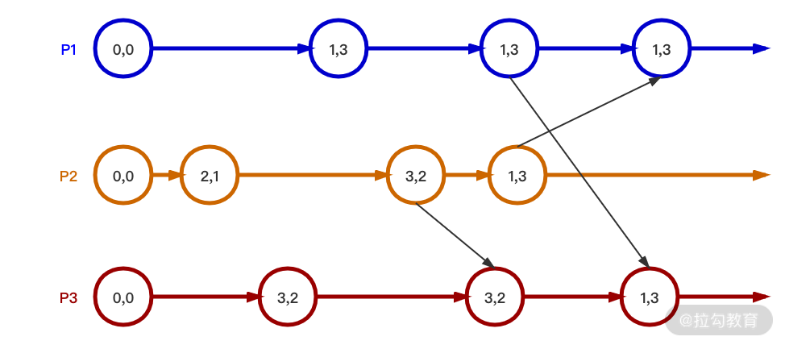

- 00 开篇词 吃透分布式数据库，提升职场竞争力.md.html
- 01 导论：什么是分布式数据库？聊聊它的前世今生.md.html
- 02 SQL vs NoSQL：一次搞清楚五花八门的“SQL”.md.html
- 03 数据分片：如何存储超大规模的数据？.md.html
- 04 数据复制：如何保证数据在分布式场景下的高可用？.md.html
- 05 一致性与 CAP 模型：为什么需要分布式一致性？.md.html
- 06 实践：设计一个最简单的分布式数据库.md.html
- 07 概要：什么是存储引擎，为什么需要了解它？.md.html
- 08 分布式索引：如何在集群中快速定位数据？.md.html
- 09 日志型存储：为什么选择它作为底层存储？.md.html
- 10 事务处理与恢复（上）：数据库崩溃后如何保证数据不丢失？.md.html
- 11 事务处理与恢复（下）：如何控制并发事务？.md.html
- 12 引擎拓展：解读当前流行的分布式存储引擎.md.html
- 13 概要：分布式系统都要解决哪些问题？.md.html
- 14 错误侦测：如何保证分布式系统稳定？.md.html
- 15 领导选举：如何在分布式系统内安全地协调操作？.md.html
- 16 再谈一致性：除了 CAP 之外的一致性模型还有哪些？.md.html
- 17 数据可靠传播：反熵理论如何帮助数据库可靠工作？.md.html
- 18 分布式事务（上）：除了 XA，还有哪些原子提交算法吗？.md.html
- 19 分布式事务（下）：Spanner 与 Calvin 的巅峰对决.md.html
- 20 共识算法：一次性说清楚 Paxos、Raft 等算法的区别.md.html
- 21 知识串讲：如何取得性能和可扩展性的平衡？.md.html
- 22 发展与局限：传统数据库在分布式领域的探索.md.html
- 23 数据库中间件：传统数据库向分布式数据库的过渡.md.html
- 24 现状解读：分布式数据库的最新发展情况.md.html
- 加餐1 概念解析：云原生、HTAP、图与内存数据库.md.html
- 加餐2 数据库选型：我们该用什么分布式数据库？.md.html
- 捐赠
16 再谈一致性：除了 CAP 之外的一致性模型还有哪些？
在“05 | 一致性与 CAP 模型：为什么需要分布式一致性”中，我们讨论了分布式数据库重要的概念——一致性模型。由于篇幅的限制，我在该部分只谈到了几种数据端（服务端）的强一致模型。那么这一讲，我们将接着讨论剩下的一致性模型，包括客户端（会话）一致性、最终一致性，等等。
现在我就和你一起，把一致性模型的知识体系补充完整。
完整的一致性模型
完整的一致性模型如下图所示。

图中不同的颜色代表了可用性的程度，下面我来具体说说。
- 粉色代表网络分区后完全不可用。也就是 CP 类的数据库。
- 黄色代表严格可用。当客户端一直访问同一个数据库节点，那么遭遇网络分区时，在该一致性下依然是可用的。它在数据端或服务端，被认为是 AP 数据库；而从客户端的角度被认为是 CP 数据库。
- 蓝色代表完全可用。可以看到其中全都是客户端一致性，所以它们一般被认为是 AP 数据库。
我们看到图中从上到下代表一致性程度在降低。我在 05 讲中介绍的是前面三种一致性，现在要介绍剩下的几种，它们都是客户端一致性。
客户端一致性
客户端一致性是站在一个客户端的角度来观察系统的一致性。我们之前是从“顺序性”维度来研究一致性的，因为它们关注的是多个节点间的数据一致性问题。而如果只从一个客户端出发，我们只需要研究“延迟性”。
分布式数据库中，一个节点很可能同时连接到多个副本中，复制的延迟性会造成它从不同副本读取数据是不一致的。而客户端一致性就是为了定义并解决这个问题而存在的，这其中包含了写跟随读、管道随机访问存储、读到已写入、单增读和单增写。
写跟随读（Writes Follow Reads）
WFR 的另一个名字是回话因果（session causal）。可以看到它与因果一致的区别是，它只针对一个客户端。故你可以对比记忆，它是对于一个客户端，如果一次读取到了写入的值 V1，那么这次读取之后写入了 V2。从其他节点看，写入顺序一定是 V1、V2。
WFR 的延迟性问题可以描述为：当写入 V1 时，是允许复制延迟的。但一旦 V1 被读取，就需要认为所有副本中 V1 已经被写入了，从而保证从副本写入 V2 时的正确性。
管道随机访问存储（PRAM）/FIFO
管道随机访问存储的名字来源于共享内存访问模型。像 05 讲中我们提到的那样，分布式系统借用了并发内存访问一致性的概念来解释自己的问题。后来，大家觉得这个名字很怪，故改用 FIFO，也就是先进先出，来命名分布式系统中类似的一致性。
它被描述为从一个节点发起的写入操作，其他节点与该节点的执行顺序是一致的。它与顺序一致性最大的区别是，后者是要求所有节点写入都是有一个固定顺序的；而 PRAM 只要求一个节点自己的操作有顺序，不同节点可以没有顺序。
PRAM 可以拆解为以下三种一致性。
- 读到已写入（Read Your Write）：一个节点写入数据后，在该节点或其他节点上是能读取到这个数据的。
- 单增读（Monotonic Read）：它强调一个值被读取出来，那么后续任何读取都会读到该值，或该值之后的值。
- 单增写（Monotonic Write）：如果从一个节点写入两个值，它们的执行顺序是 V1、V2。那么从任何节点观察它们的执行顺序都应该是 V1、V2。
同时满足 RYW、MR 和 MW 的一致性就是 PRAM。PRAM 的实现方式一般是客户端一直连接同一个节点，因为读写同一个节点，故不存在延迟性的问题。
我们可以将 PRAM 与 WFR 进行组合，从而获得更强的因果一致。也就是一个客户端连接同一个节点，同时保持回话因果一致，就能得到一个普通的因果一致。这种模式与 05 讲中介绍的是不一样的，这次我们是采用模型递推的模式去构建一致性，目的是方便模型记忆。但这并不代表因果一致一定是这种模型化的构建方式；相反，在 05 讲中介绍的时间戳模式更为普遍。
我们刚才说到，PRAM 是严格可用的，并不是完全可用，如果要完全可用一般可以牺牲 RYW，只保留 MR 和 MW。这种场景适合写入和读取由不同的客户端发起的场景。
至此，我们已经将所有的强一致模型介绍了一遍。掌握上面那个图，你就掌握了完整的一致性模型。下面我要为你介绍最弱的一致性模型，也就是最终一致。
最终一致性
最终一致性是非常著名的概念。随着互联网和大型分布式系统的发展，这一概念被广泛地传播。它被表述为副本之间的数据复制完全是异步的，如果数据停止修改，那么副本之间最终会完全一致。而这个最终可能是数毫秒到数天，乃至数月，甚至是“永远”。
最终一致性具有最高的并发度，因为数据写入与读取完全不考虑别的约束条件。如果并发写入修改同一份数据，一般采用之前提到的一些并发冲突解决手段来处理，比如最后写入成功或向量时钟等。
但是，最终一致性在分布式数据库中是完全不可用的。它至少会造成各种偏序（skew）现象，比如写入数据后读取不出来，或者一会儿能读取出来，一会儿又读取不出来。因为数据库系统是底层核心系统，许多应用都构建在它上面，此种不稳定表现在分布式数据库设计中是很难被接受的。故我们经常采用可调节的最终一致性，来实现 AP 类的分布式数据库。
可调节一致性
一般的分布式系统的写入和读取都是针对一个节点，而可调节一致性针对最终一致性的缺点，提出我们可以同时读取多个节点。现在我们引入可调节一致性设计的三个变量。
- 副本数量 N：是分布式集群中总的节点数量，也就是副本总量。
- 最少并发写入数量 W：当一份数据同步写入该数量的节点后，我们认为该数据是写入成功的。
- 最少并发读取数量 R：当读取数据时，至少读取该数量的节点，比较后选择最终一份最新的数据。如此我们才认为一次读取操作是成功的。
当分布式系统的并发读写数量满足下面的公式：
W + R > N
这时我们认为该系统的并发度可以满足总是能读取到最新的数据。因为你可以发现，写入节点与读取的节点之间肯定存在重合，所以每次读取都会发现最新写入的一个节点。
一个常见的例子是 N=3、W=2 和 R=2。这个时候，系统容忍一个节点失效。正常情况下三个节点都能提供读写服务，如果其中一个节点失效，读写的最少节点数量依然可以满足。在三个节点同时工作的情况下，最新数据至少在两个节点中，所以从三个里面任意读取两个，其中至少一个节点存在最新的数据。
你可能注意到，我上文用了很多“最少”这种描述。这说明在实际中实现这种分布式数据库时，可以在写入时同时写入三个节点。但此时只要其中两个节点返回成功，我们就认为写入成功了。读取也同样，我们可以同时发起三个读取，但只需要获取最快返回的两个结果即可。
那么有的人会问，为什么不每次写入或读取全部节点呢？我的回答是也可以的，比如对于写入负载较高的场景可以选择 W=1、R=N；相反，对于读取负载高的场景可以选择 W=N、R=1。你不难发现这两种模式分别就是上文讨论的强一致性：前者是客户端一致性，后者是数据一致性（同步复制）。故可调节一致性同时涵盖了弱一致性到强一致性的范围。
如何选择 W 和 R 呢？增加 W 和 R 会提高可用性，但是延迟会升高，也就是并发度降低；反之亦然。一个常用的方式是 Quorums 方法，它是集群中的大多数节点。比如一个集群有 3 个节点，Quorums 就是 2。这个概念在分布式数据库中会反复提及，比如领导选举、共识等都会涉及。
对于可调节一致性，如果我们的 W 和 R 都为 Quorums，那么当系统中失败节点的数量小于 Quorums 时，都可以正常读写数据。该方法是一种在并发读与可用性之间取得最佳平衡的办法。因为 W 和 R 比 Quorums 小，就不满足 W+R>N；而大于 Quorums 只降低了并发度，可用性是不变的。因为 W 和 R 越大，可失败的节点数量越小。
但是使用 Quorums 法有一个经典的注意事项，那就是节点数量应为奇数，否则就无法形成多数的 Quorums 节点。
Witness 副本
我在上文介绍了利用 Quorums 方法来提高读取的可用性。也就是写入的时候写入多个副本，读取的时候也读取多个副本，只要这两个副本有交集，就可以保证一致性。虽然写入的时候没有写入全部副本，但是一般需要通过复制的方式将数据复制到所有副本上。比如有 9 个节点，Quorums 是 5，即使一开始写入了 5 个节点，最终 9 个节点上都会有这一份数据。这其实增加了对于磁盘的消耗，但是对于可用性没有实质的提高。
我们可以引入 Witeness 副本来改善上面这种情况，将集群中的节点分为复制节点与 Witness 节点。复制节点保存真实数据，但 Witeness 节点在正常情况下不保存数据。但是当集群中的可用节点数量降低的时候，我们可以将一部分 Witeness 节点暂时转换为可以存储数据的节点。当集群内节点恢复后，我们又可以将它们再次转换为 Witeness 节点，并释放上面存储的数据。
那么需要使用多少个 Witeness 副本来满足一致性呢？假设我们现在有 r 个复制副本和 w 个 Witeness 副本。那么总副本数量为 r+w，需要满足下面两个规则：
- 读写操作必须要有 Quorums 数量的节点，也就是 (r+w)/2+1 个节点参与；
- 在条件 1 给出的节点中，至少有一个节点是复制节点。
只要满足这两条规则，就可以保证 Witeness 节点的加入是满足一致性要求的。
现在分布式数据库广泛使用 Witeness 节点来提高数据存储的利用率，如 Apache Cassandra、Spanner 和 TiDB 等。但是它们的使用方法不尽相同，感兴趣的话你可以自己深入研究。
CRDT 算法
上文我们探讨了最终一致性方案，除了使用可调节手段来保持一致性外。我们可以使用 Conflict-Free Replicated Data Type（CRDT）来解决最终一致的数据冲突问题。
CAP 理论提出者 Eric Brewer 撰文回顾 CAP 时也提到，C 和 A 并不是完全互斥，建议大家使用 CRDT 来保障一致性。自此各种分布式系统和应用均开始尝试 CRDT，微软的 CosmosDB 也使用 CRDT 作为多活一致性的解决方案，而众多云厂商也使用 CRDT 来制定 Redis 的多活一致性方案。
由于目前 CRDT 算法仍然处于高速发展的阶段，为了方便你理解，我这里选取携程网内部 Redis 集群一致性方案，它的技术选型相对实用。如果你对 CRDT 有兴趣，可以进一步研究，这里就不对诸如 PN-Counter、G-Set 等做进一步说明了。
由于 Redis 最常用的处理手段是设置字符串数据，故需要使用 CRDT 中的 register 进行处理。携程团队选择了经典的 LWW Regsiter，也就是最后写入胜利的冲突处理方案。
这种方案，最重要的是数据上需要携带时间戳。我们用下图来说明它的流程。

从图中可以看到，每个节点的数据是一个二元组，分别是 value 和 timestamp。可以看到节点间合并数据是根据 timestamp，也就是谁的 timestamp 大，合并的结果就以哪个值为准。使用 LWW Register 可以保证高并发下合并结果最终一致。
而删除时，就需要另外一种算法了。那就是 Observed-Remove SET（OR Set），其主要的目的是解决一般算法无法删除后重新增加该值的情况。
它相较于 LWW-Register 会复杂一些，除了时间戳以外，还需要给每个值标记一个唯一的 tag。比如上图中 P1 设置（1，3），实际需要设置（1α，3）；而后如果删除 1，集合就为空；再添加 1 时，标签就需要与一开始不同，为（1β，5）。这样就保证步骤 2 中的删除操作不会影响步骤 3 中的增加操作。因为它们虽然数值相同，但是标签不同，所以都是唯一的。
以上就是 Redis 跨 IDC 异步同步的核心技术方案，当然细节还是有很多的，有兴趣的话你可以自行学习。
总结
到这里，我们已经学习了分布式数据库中关于一致性问题的全部内容。这部分你要理解一致性模型图，从而可以系统地掌握数据端一致性与客户端一致性；同时结合 CAP 理论体会不同一致性所对应的可用性。
最终一致性一般应用在跨数据中心、跨区域节点这种无主同步的场景，使用可调节的一致性和 CRDT 算法可以保证同步的一致性。
学习一致性部分后，我们就可以评估各种分布式数据库文档中的一致性概念了，从而理解它们背后的设计理念。在本模块的最后一讲，我会举例说明一些分布式数据库一致性方面的背后逻辑。
欢迎你和我一起思考，祝你每天能强大一点。下一讲我们将探讨数据是如何可靠进行传输的，希望准时与你相见。
© 2019 - 2023 Liangliang Lee. Powered by gin and hexo-theme-book.